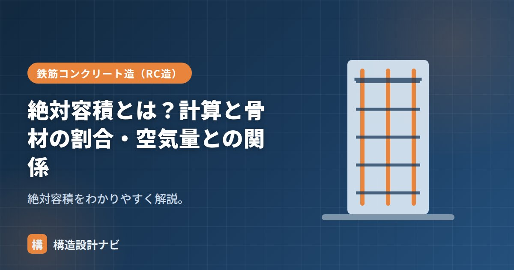

絶対容積とは？計算と骨材の割合・空気量との関係

絶対容積（ぜったいようせき）とは、材料のすき間（空隙）を含まない、実質部分だけの体積のことです。コンクリートの配合設計（調合設計）の基礎になる考え方で、セメント・水・細骨材・粗骨材・空気といった構成要素の量を過不足なく決めるために使われます。見た目の「かさ」の体積とは異なる指標であるため、意味を正しく理解しておくことが配合計算のつまずきを防ぐポイントです。
- 絶対容積は材料のすき間を含まない実質部分の体積で、質量÷密度で求める
- コンクリート1m³はセメント・水・細骨材・粗骨材・空気の絶対容積の合計
- 空気量・水量・セメント量を決めると、残りから骨材量が定まる
意味
砂や砂利をバケツに入れると、粒の間に空気のすき間ができます。このすき間を除いた、粒そのものの体積が絶対容積です。反対に、すき間も含めた見た目の体積は「実積率」や「かさ体積」と呼ばれ、絶対容積とは区別して扱われます。配合は、この絶対容積で各材料を積み上げて計算するため、見た目のかさの体積で計算してしまうと、実際の配合と大きくずれてしまいます。
計算方法
この式からわかるとおり、同じ質量の材料でも密度が高いほど絶対容積は小さくなります。例えば密度の高い粗骨材と密度の低い軽量骨材では、同じ質量でも占める絶対容積が異なるため、配合設計では材料ごとの密度を正しく把握しておくことが欠かせません。
コンクリート1m³の構成
コンクリート1m³（＝1000L）は、各材料の絶対容積と空気量の合計で構成されます。
例えば、セメントの絶対容積が100L、水が160L、空気が45L（空気量4.5%相当）だとすると、残りの1000－100－160－45＝695Lが、細骨材と粗骨材を合わせた骨材の絶対容積になります。
骨材の割合・空気量との関係
1m³からセメント・水・空気の絶対容積を引いた残りが、骨材（細骨材＋粗骨材）の絶対容積です。これを細骨材率で細骨材と粗骨材に分けます。空気量を見込むと、そのぶん骨材の容積は減ります。空気量・水量・セメント量を決めると、骨材量が定まる、という関係です。
細骨材率は、骨材の絶対容積のうち細骨材が占める割合のことで、ワーカビリティ（施工のしやすさ）や仕上がりに影響します。細骨材率が高すぎるとコンクリートが粘りすぎ、低すぎると分離しやすくなるため、適切なバランスで決めることが求められます。
配合設計で気をつけたいこと
絶対容積の計算では、材料の密度の取り方（表乾密度・絶乾密度など）を混同すると誤差が生じます。骨材の密度は含水状態によって値が変わるため、配合計算に用いる密度がどの状態を基準にしたものかを確認したうえで計算することが大切です。
Q1. 絶対容積とかさ容積（見た目の体積）はどちらを使えばよいですか。
配合設計（材料の量を決める計算）では、必ず絶対容積を使います。現場でスコップやバケツで量を把握する際に使う「かさ」の体積とは考え方が異なるため、混同しないよう注意が必要です。
Q2. 絶対容積を求めるのに特別な機材は必要ですか。
基本的には材料の質量と密度がわかれば計算できます。密度は試験（JISに定められた方法など）によって求めるか、材料の試験成績書に記載された値を用います。
配合計画書をチェックする際に見落とせないのが、骨材の密度をどの含水状態（表乾か絶乾か）で計算しているかだ。密度の基準を混同したまま絶対容積を計算すると、単位水量や骨材量にわずかなずれが生じ、後々の品質管理に響くことがある。
コンクリート1m³の構成（図解）
配合計算の流れ
絶対容積の考え方を使って、実際に骨材量を求める手順を追ってみましょう。
水：175 kg ÷ 1.00 kg/L ＝ 175 L
セメント：350 kg ÷ 3.15 kg/L ≒ 111 L
空気：1,000 L × 4.5% ＝ 45 L
1,000 − (175 ＋ 111 ＋ 45) ＝ 669 L
s/a ＝ 45% とすると
細骨材：669 × 0.45 ≒ 301 L → 質量 301 × 2.60 ≒ 783 kg
粗骨材：669 × 0.55 ≒ 368 L → 質量 368 × 2.65 ≒ 975 kg
細骨材率（s/a）は、骨材の絶対容積のうち細骨材が占める割合です。この値が大きいと砂が多くなり、ワーカビリティは良くなりますが単位水量が増えます。逆に小さいと経済的ですが、ざらついて施工しにくくなります。一般に40〜50%程度で調整します。
よくある質問
Q1. なぜ質量ではなく絶対容積で計算するのですか？
コンクリートの体積は、材料の体積の合計で決まるからです。材料ごとに密度が異なるため、質量で足し合わせても体積にはなりません。1m³のコンクリートを作るには、各材料が占める実質の体積（絶対容積）を合計して1,000Lになる必要があります。この考え方が配合設計の骨格になっています。
Q2. 表面水率と絶対容積はどう関係しますか？
現場の骨材は表面が濡れているため、その水分を考慮する必要があります。配合表の骨材量は表面乾燥飽水状態（表乾状態）を前提としているので、実際に計量するときは表面水の分だけ骨材を増やし、その分の水を減らします。この調整を怠ると、実際のW/Cが設計値からずれてしまいます。絶対容積の計算自体は表乾密度で行います。
Q3. 空気量を体積に含めるのはなぜですか？
空気も体積を占めるからです。AE剤で連行された空気は、コンクリート中に4〜6%程度の体積を占めており、これを無視すると材料を入れすぎて体積が1m³を超えてしまいます。そのため配合計算では、あらかじめ空気量分の体積を差し引いてから骨材量を決めます。空気量が変動すると実際の配合もずれるため、現場での空気量管理が重要になります。
まとめ
- 絶対容積は空隙を含まない実質体積。質量÷密度で求める。
- コンクリート1m³＝セメント＋水＋細骨材＋粗骨材＋空気の絶対容積合計。
- 空気量・水・セメントを決めると、残りから骨材量が定まる。
- 密度は含水状態によって変わるため、計算に使う基準を確認することが重要。